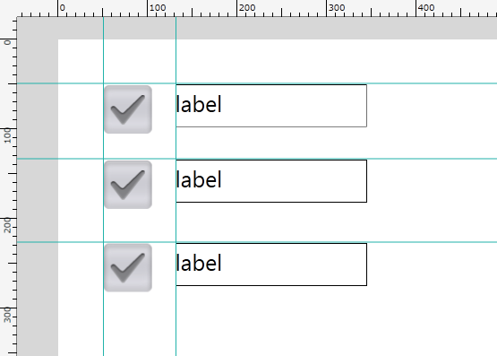
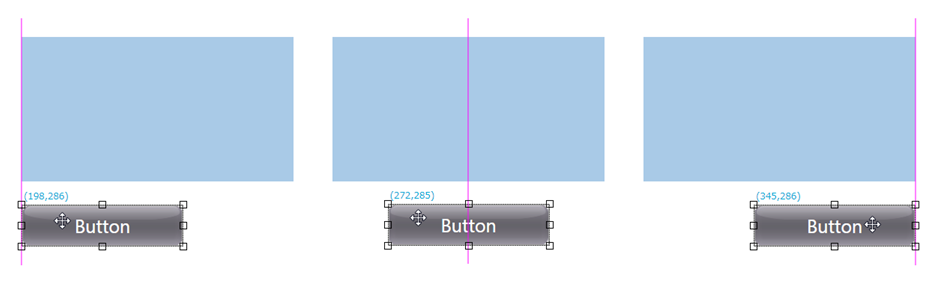
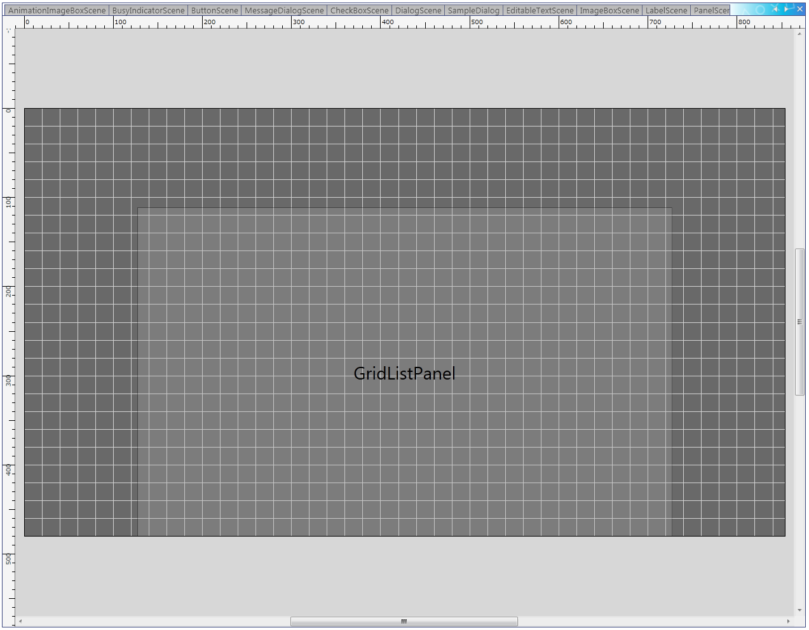
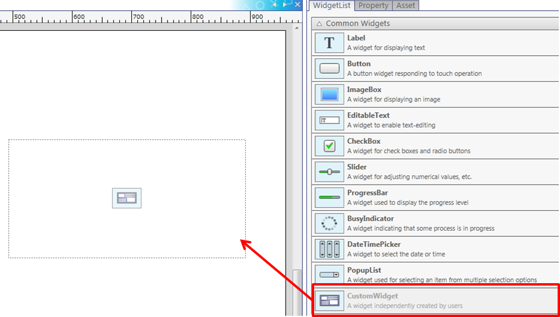
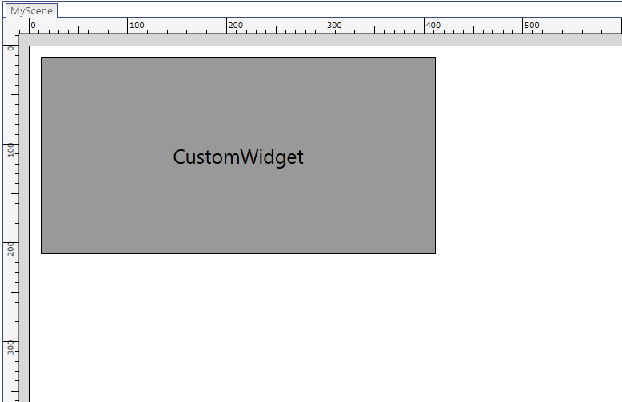
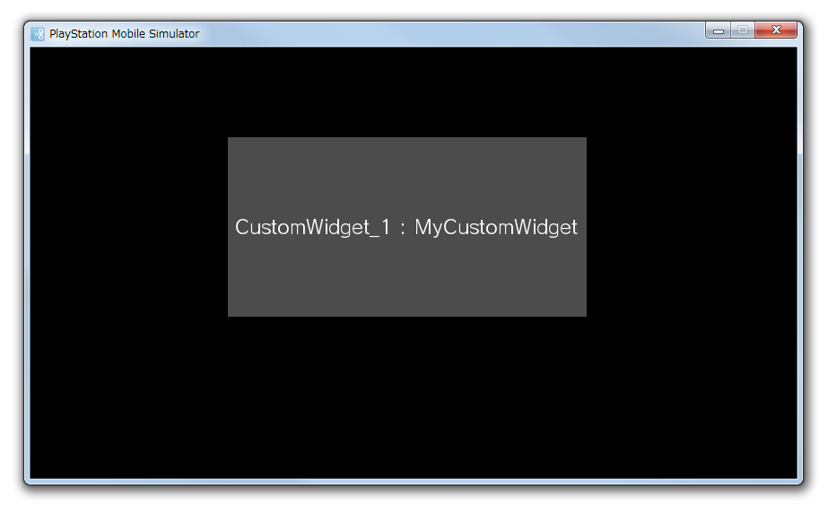

This chapter introduces tips for efficiently creating the layout of an application.
Contents
As a feature to easily align widgets, the UI Composer provides guide lines and grid lines. Use the menu to set widget alignment to the guide/grid lines and to show or hide these lines. The colors of the guide/grid lines and the width of the grid can be set from the menu's [File] - [Preference]. There are two types of guide lines, "user-defined guide" lines and "smart guide" lines.
A user-defined guide line is useful for placing widgets on a specific coordinate; it can be freely set by dragging the ruler from the layout window using your mouse. It is also possible to add or remove guide lines from the menu (Figure 1).
Figure 1 User-defined Guide
A smart guide line is provided to support the alignment of a widget placed on the layout canvas and a widget that is being operated by the mouse (Figure 2).
It is displayed when the edges of the placed widget and the operated widget are aligned along the upper/lower/left/right edge or along the center (horizontal/vertical) line.
Figure 2 Smart Guide
Grid lines are overlaid on the layout canvas (Figure 3).

Figure 3 Grid Guide
An application created by the UI Toolkit can be run on devices with differing resolutions. Thus, the size of the Scene laid out by the UI Composer may differ from the size of the Scene that will be rendered on the actual device.
When the size of the Scene or Panel changes, the UISystem lays out the widgets in the Scene or Panel according to the layout anchor (Anchor) settings. With the Anchor, settings can be made to fix the upper/lower/left/right margin, and to automatically resize the width and height. The UI Composer can be used to visually make settings to the Anchor (Figure 4).

Figure 4 Anchor Customizer
The Anchor Customizer comprises six toggle switches. Behavior when the parent widget of a widget is resized will be displayed as an animation on the Previewer. The animation will only be played back when the mouse cursor is on the Anchor Customizer.
Relationships between the contents set with the UI Composer and the value of the Anchor specified by the output source code are shown below.

Figure 5 Layout Anchor Settings and Results of Automatically Resized Widgets
Note that when the laying out the Panel class, (when the display of the layout canvas is Panel), the layout anchor of the Panel to be the layout root cannot be set (possible to layout onto a separate layout canvas). Set an appropriate layout anchor when an instance is created.
Different screen layouts can be specified according to the device's holding direction.
Select [Display] - [Canvas Orientation] from the menu to switch the orientation of the layout canvas (Figure 6).

Figure 6 Orientation Switch of the Layout Canvas
Widgets can specify the position, size, and other properties for each orientation of the layout canvas. That means that the screen can be laid out for when the device is oriented vertically and horizontally.
A method to switch the screen layout will be created in the output source code (refer to the following source code). When calling this method, for example, when the device's holding direction changes, you will be able to specify an appropriate layout for the new holding direction.
Initialization can be performed according to the holding direction; when not specified, the layout will be horizontal.
partial class MyScene { // ... private void InitializeWidget() { InitializeWidget(LayoutOrientation.Horizontal); } private void InitializeWidget(LayoutOrientation orientation) { // create instance SetWidgetLayout(orientation); // set property // update language } private LayoutOrientation _currentLayoutOrientation; public void SetWidgetLayout(LayoutOrientation orientation) { switch (orientation) { case LayoutOrientation.Vertical: this.DesignWidth = 400; this.DesignHeight = 600; sceneBackgroundPanel.SetPosition(0, 0); sceneBackgroundPanel.SetSize(400, 600); sceneBackgroundPanel.Anchors = Anchors.Top | Anchors.Bottom | Anchors.Left | Anchors.Right; sceneBackgroundPanel.Visible = true; ImageBox_1.SetPosition(0, 10); ImageBox_1.SetSize(400, 264); ImageBox_1.Anchors = Anchors.Top | Anchors.Height | Anchors.Left | Anchors.Width; ImageBox_1.Visible = true; Label_3.SetPosition(23, 282); Label_3.SetSize(353, 268); Label_3.Anchors = Anchors.Top | Anchors.Height | Anchors.Left | Anchors.Width; Label_3.Visible = true; break; default: this.DesignWidth = 600; this.DesignHeight = 400; sceneBackgroundPanel.SetPosition(0, 0); sceneBackgroundPanel.SetSize(600, 400); sceneBackgroundPanel.Anchors = Anchors.Top | Anchors.Bottom | Anchors.Left | Anchors.Right; sceneBackgroundPanel.Visible = true; ImageBox_1.SetPosition(0, 0); ImageBox_1.SetSize(600, 400); ImageBox_1.Anchors = Anchors.Top | Anchors.Height | Anchors.Left | Anchors.Width; ImageBox_1.Visible = true; Label_3.SetPosition(0, 398); Label_3.SetSize(214, 36); Label_3.Anchors = Anchors.Top | Anchors.Height | Anchors.Left | Anchors.Width; Label_3.Visible = false; break; } _currentLayoutOrientation = orientation; }The layout of the code output by UIComposer is in the horizontal direction (LayoutOrientation.Horizontal).
When the vertical direction (LayoutOrientation.Vertical) is set as the default upon startup, a rewrite is required within the constructor to use InitializeWidget (LayoutOrientation).
With UIComposer, user-created layouts (Scene, Panel, Dialog, and ListPanelItem) can be previewed in the simulator.
The preview is performed for the layout currently being edited with the tool, and it is displayed at the same size as the layout.
The following items can be checked with the preview. Operations when buttons are pressed, etc. cannot be previewed. Only visually-related items can be checked with the tool preview.
- Layout of widgets placed in the tool
- Status of widgets with text, images, etc. set in the tool
- Animation for scene transitions, widget effects, etc.
Preview Usage Procedure
- From the menu, select [File] -> [Preview].
Preview Feature Special Instructions
- ListPanel, GridListPanel, and LiveListPanel will automatically add and list 100 ListPanelItems that have been set.
Preview Example

Figure 7 Display on the Layout Canvas (LiveSphere)

Figure 8 Display with the Preview (LiveSphere)
Figure 9 Display on the Layout Canvas (GridListPanel)

Figure 10 Display with the Preview (GridListPanel)
You can create the layout for a widget created independently by a user and not included in the standard widgets.
Drag-and-drop a CustomWidget from the WidgetList window and place it on the layout canvas in the same manner as other widgets (Figure 11).
Figure 11 Placing a custom widget on the layout canvas
Figure 12 Displaying a custom widget on the layout canvas
When a CustomWidget is selected, the NameSpace and ClassName properties of the CustomWidget will be displayed in the property window.
Edit the NameSpace property to set the namespace of the CustomWidget, and edit the ClassName property to set the class of the CustomWidget (Figure 13).

Figure 13 CustomWidget property
Nothing is applied to the display on the layout canvas.
- Because a CustomWidget is a widget created independently by the user, the properties are not known. Therefore, the UIComposer cannot be used to edit the properties of the CustomWidget.
- Because a CustomWidget is a widget created independently by the user, the type of display is not known. Therefore, a preview can be displayed by displaying the dummy CustomWidget (Figure 14).
Figure 14 CustomWidget preview display
- Eliminated the "custom panel layout" feature due to the addition of the "custom widget layout" feature.